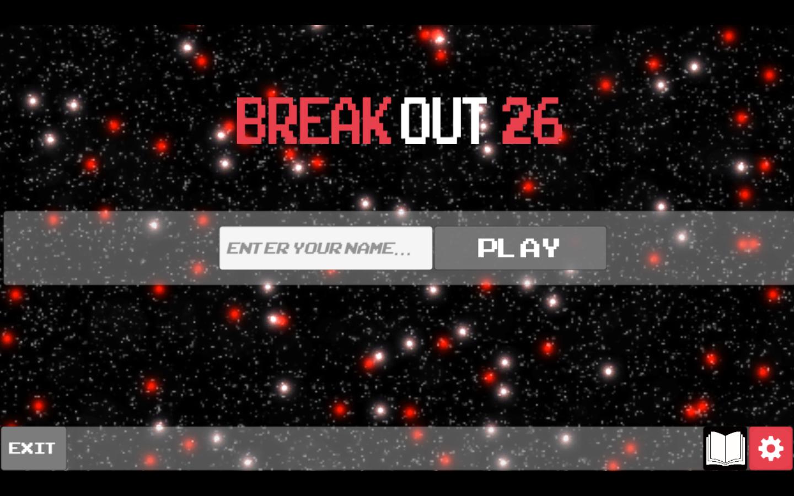
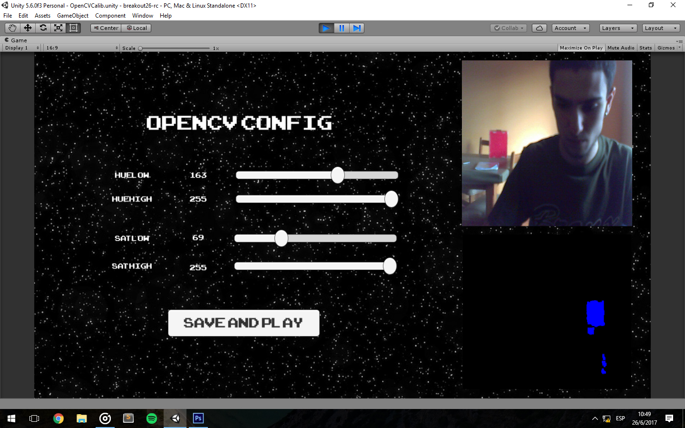
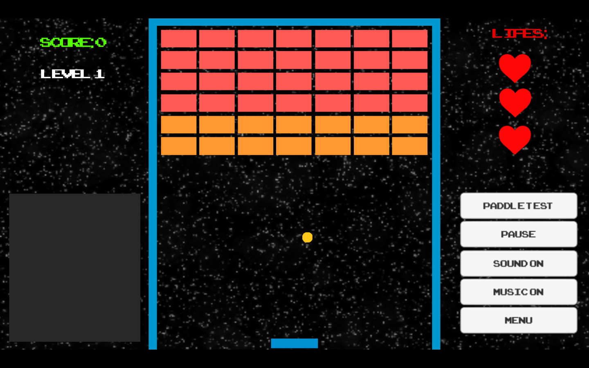

breakout26 (manual de juego)
-
Descripcion :
Basado en el BreakOut '76 (primera version lanzada por Atari), el BreakOut26 icluye la realidad aumentada. Esta nueva version se mueve a traves de nuestros propios movimientos frente a una camara, dandonos asi una mayor expariencia del juego.
-
Objetivo:
El objetivo del juego es destruir todos los bloques en los diferentes niveles, evitando que la pelotita caiga del paddle para no perder vidas.
Puntaje:
En el juego existen dos tipos de bloques a destruir: Los de color naranja y los de color rojo:
Los de color naranja se eliminan de dos golpes, el primero vale +10 puntos y el segundo +20.
Los de color rojos se eliminan de un solo golpe y estos dan +10 puntos.
Niveles:
EL juego cuenta con un solo nivel.
Cantidad de vidas:
En el juego la cantidad de vida son 3(tres), que se van perdiendo cada vez que la pelotita cae del paddle.
Instrucciones de juego:
-
Pantalla de inicio: Nos encontramos en la pantalla de inicio, en la que tenemos las siguiente opciones:
1) Ingresar nuestro nombre: para jugar ponemos nuestro nombre y le damos a play.
2) Exit: Es el boton para salir del juego, lo apretamos y nos lleva al escritorio de nuestra pc.
3) Manual: Es el boton para ir al manual de jugador.
4)Configuraciones: Es el boton para entrar a las configuraciones de la camara (Explicadas mas abajo).

-
OpenCV Config: Las siguientes barras Huelow, Huehigh, Satlow, Sathigh son las que usaremos para detectar el color de nuestro objeto. En el cuadro inferior de esta captura vemos que tiene manchas azules. Esto significa que el color dtl objeto (em este caaso rojo) a sido detectado. Podemos usar cualquier color. Sea el color que sea, deben aparecer estas manchas azules, porque son las que representan a nuestro objeto(Mientras mas tomen la forma del objeto mejor funcionara el juego cuando tengamos que mover el paddle).

-
Distancia (Recomendada): La distancia que se recomienda para poder jugarlo con la mayor comodidad posible es de aproximadamente 1 (un) metro. Esto va evitar que el el paddle vibre y va mejora la precision del movimiento.
-
Caracteristicas del objeto(Recomendada): Aunque se pueda usar cualquier onbjeto, para una mayor comodiad en el juego es preferible que este sea de una forma rectangular o cuadrada, de un color opaco y de preferencia de un color llamativo (Por ej: Verde fluor).
-
Mover paddle: Como vemos en las animaciones, para poder trasladar al paddle de lugar, debemos mover nuestro objeto (previamente configurado) hacia la izquierda o la derecha, segun la direccion de la bola (Es la que queremos golpear). En caso de que no se mueva nuestro paddle, deberemos checkear bien las configuraciones.
-
Opciones:
1) Tenemos un contador de vidas (lifes) y cuando se acaben perderas el juego.
2) En la parte superior izquierda hay un un contador de scores el cual mostrara tu puntaje con respecto a la cantidad de ladrillos destruidos.

3) En la parte inferior derecha encontraremos un menu:
- Paddle: Permite mover el paddle pausando el juego por un momento.
- Pause: Boton con el que le ponemos pausa al juego, para volver a jugar se apreta el mismo boton.
- Soun on/off: Boton con el que podemos apagar/encender los sonidos.
- Music on/off: Boton con el que podemos apagar/encender la musica.
- Menu: Apretando este boton volvemos a la pantalla de inicio.